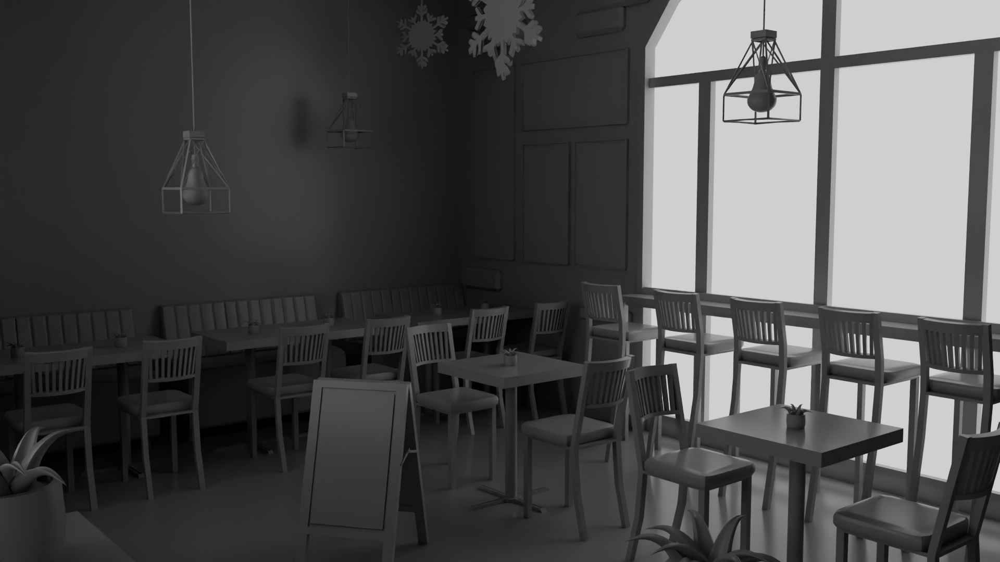
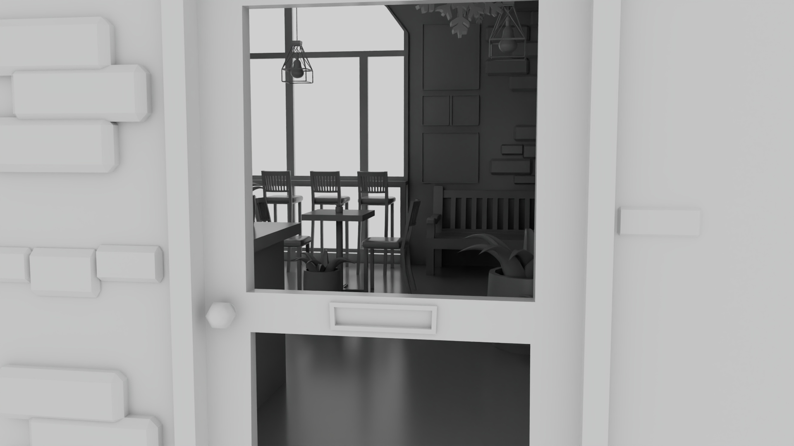
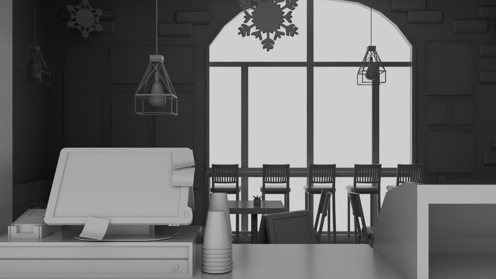

Main Dining - Cafe
The game is a small winter-themed visual novel where the player is a new barista working at a cafe during Christmas season. The POV is in first-person. As customers come in, each one is a deaf character who signs their order to you. The gameplay is built around understanding what they’re signing. The setting of Sign Language is: British Sign Language / Simple Sign / Body Language.
ShowReel - YouTube

Cash Register (Home Screen) - Cashier's POV)

Cash Register (Order Screen) - Cashier's POV
Main Dining - Full View

Main Dining - Chair View

Main Dining - Corner View

Main Dining - Ceiling View (Focus on the sign)

Main Dining - Sign View

W/O Texture

W/O Texture

W/O Texture